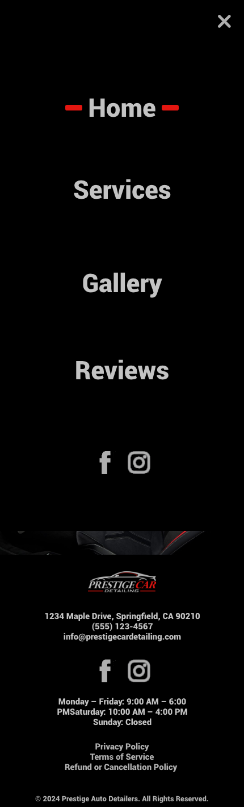
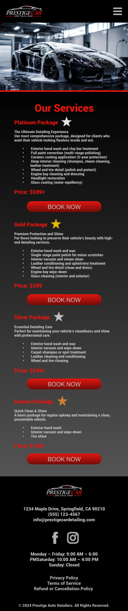
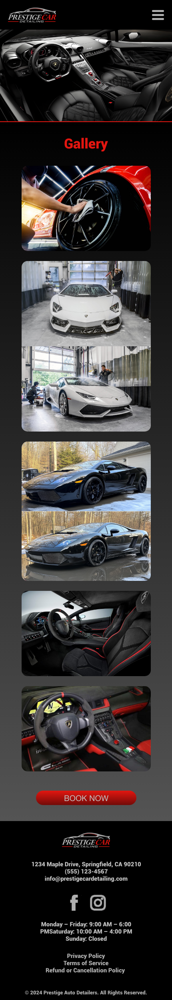
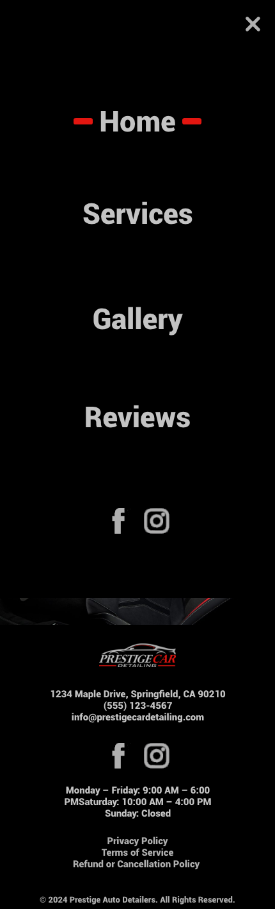
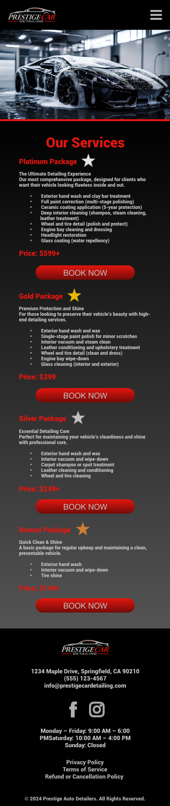
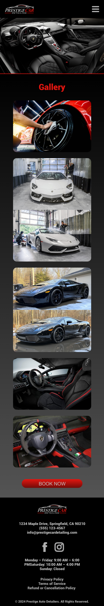

Prestige Auto Detailing
UI/UX Design Prototype
A high-fidelity UI/UX design concept created in Adobe XD to showcase a modern, clean, and user-friendly booking experience for an auto detailing service.
The Goal
The goal of this project was to design a clean, modern, and easy-to-navigate interface for an auto detailing business that allows customers to browse services, view previous work, and book appointments quickly and intuitively.
The Approach
I focused on creating a simple, visually appealing layout with clear navigation, strong visual hierarchy, and a frictionless booking flow. The design emphasizes readability, large imagery, and straightforward service selection.
The Result
The result is a polished, professional UI/UX prototype that demonstrates a complete customer journey — from landing page, to service selection, to booking — suitable for presentation or handoff to a development team.
Design Screens
Tap or click any image to view it full size.
 





Design Highlights
- Modern, clean visual style
- Clear service categories and navigation
- Simple booking flow concept
- Strong use of imagery and spacing
- Mobile-first layout thinking
Tools Used
- Adobe XD
View the interactive prototype: Prestige Auto Detailing (Adobe XD)